Puedes acceder a este santuario desde que llegas a la región de la torre de Picos Gemelos. Se encuentra bajo el Pico Gemelo del norte. Para llegar a él lo mejor es que subas por el camino que hay enfrente, en el pico sur y desde allí saltes usando la paravela.
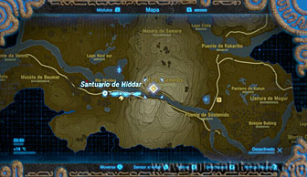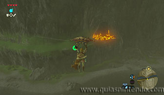
Una vez dentro tendrás que ir pisando los interruptores que encuentras para lograr que diferentes esferas vayan introduciéndose en sus respectivos agujeros y así activen las plataformas para poder avanzar. El primero es muy sencillo, simplemente pisa el interruptor y la esfera caerá. Después espera a la plataforma que te permite seguir avanzando y monta en ella.
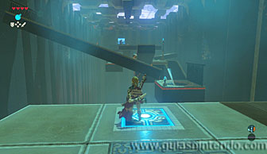
El segundo mueve dos plataformas, debes dejar de pisar el interruptor antes de que la esfera caiga de la primera plataforma, pero en el momento justo para que, por la inercia, llegue a caer en la plataforma de más abajo.
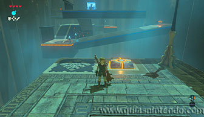
En el tercero debes dejar de pisar el interruptor cuando la esfera esté a punto de llegar al borde de la plataforma. El objetivo es que, al levantarse la plataforma, impulse a la esfera hacia su objetivo.
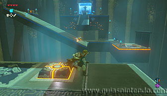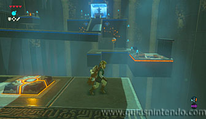
Ya puedes llegar al altar, pero antes puedes coger un cofre. Para alcanzarlo debes usar el módulo del Imán y levantar un barril metálico que está más abajo. Llévalo hacia el último interruptor que has pisado y suéltalo sobre él.
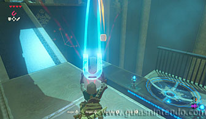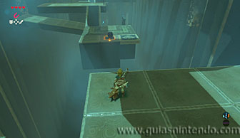
Así se elevará la plataforma donde estás y puedes alcanzar el cofre que contiene un Pañuelo de escalada.
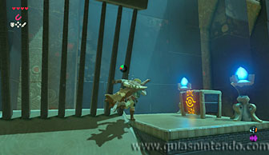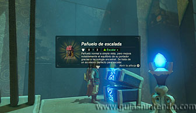
El problema ahora es que no puedes llegar al altar, pero solo debes ir por un nuevo camino. Baja al lugar donde estaban los barriles metálicos y allí encuentras unas escaleras para llegar al altar.
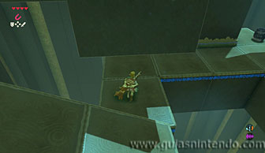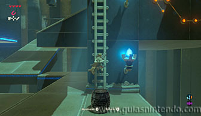
Así alcanzarás el altar del santuario y podrás examinarlo para obtener un símbolo de valía.
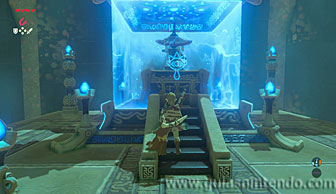